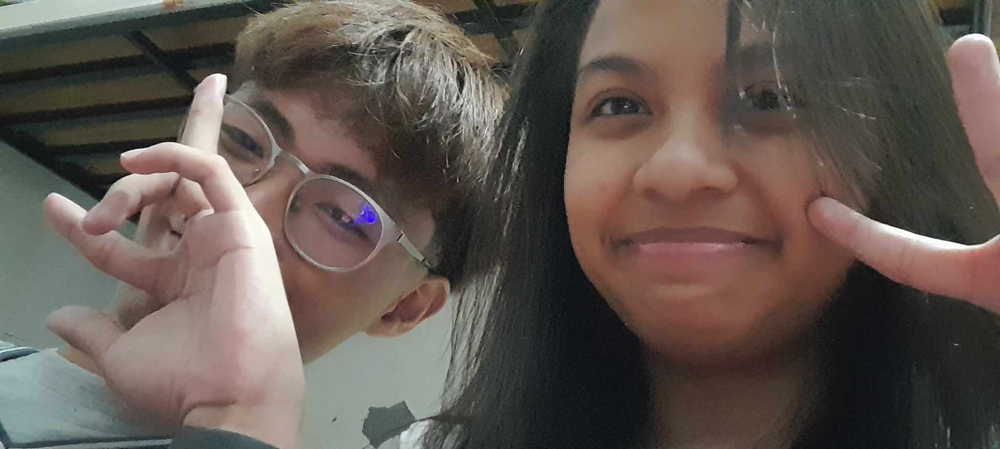
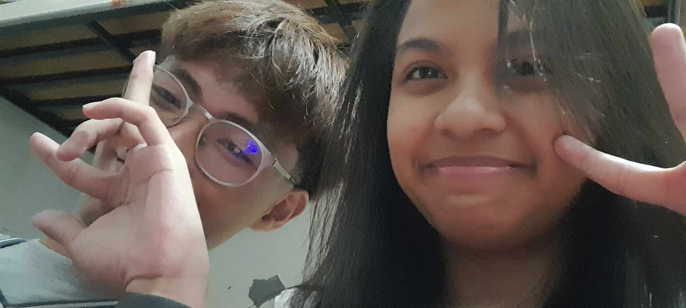

Dear Hannah,
I made this website just for you
and to go back to our past, it may have been very
rough but I cherished every time we spent together.
It may be some small giggles, corny jokes, the feeling
looking at each other and laughing because we know
for a fact that we do love each other, it's just that
sometimes, things get in our way. But none of it comes
close how you loved me so much, you gave me the love that
I don't even know I deserve. I am indebted to you so much
and I feel so ashamed that I'm not able to grow as much as
you did when you tried to love me and how I hurt you sometimes.
But none of it matters now, I'll always know that we love each
other very much and you don't even need to prove it for me to
know that you do.
I've found our pictures from back then, and I'm so proud
with how much we've grown together and how we made each other as
a backbone to improve. I never knew that we'll be able to grow this
much as a person and I'm very much happy with it. I hope we're able
to grow more and become the bestbversion of ourselves even if
through any mess and chaos. I wanna stay with you, I'm sorry if
sometimes I'm not able to show it. I love you so much and I hope
we'll be able to love each other more.💖
--love Gri.
Things to remember
-Jumbo Hotdog
-April 18 8:33pm, 2025
-December 3, 2025
-December 8, 2025
 
